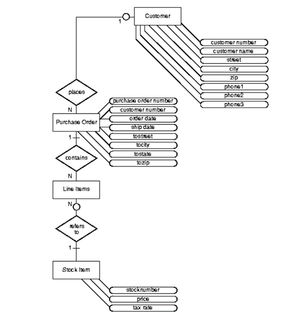

Object-relational Model
Object-relational Model is also known as the extended relational model or post-relational model. According to Kalis (2004), this model corrects a number of flaws in the relational model. The inability to handle BLOBs is the most significant of these. Complex data types such as time series, geospatial data, video files, audio files, emails, or directory structures are BLOBs, LOBs, or Binary Large Objects. An object-relational database system encapsulates functions and data structures, allowing it to perform analytical and complicated data manipulation operations.

History of Object Relational Data Model
Both relational and object-oriented data models are extremely beneficial. However, it was determined that they both lacked certain traits, therefore work began on creating a model that combined the two. As a result of research conducted in the 1990s, the object relational data model was developed. (Castro, 2018)
As stated by Castro (2018), One of the main goals of the Object relational data model is to bridge the gap between relational databases and the object-oriented methods common in programming languages like C++, C#, and Java.
Disadvantages of Object Relational model
Because it combines the features of both the Object-oriented data model and the Relational data model, the object relational data model can be rather complicated and difficult to handle at times. (Castro, 2018)